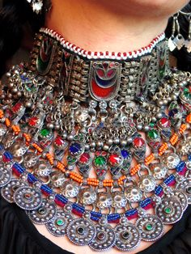
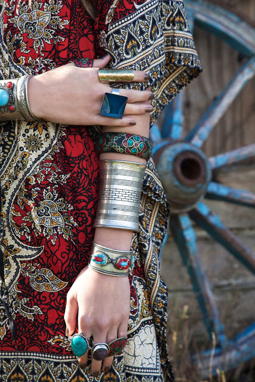
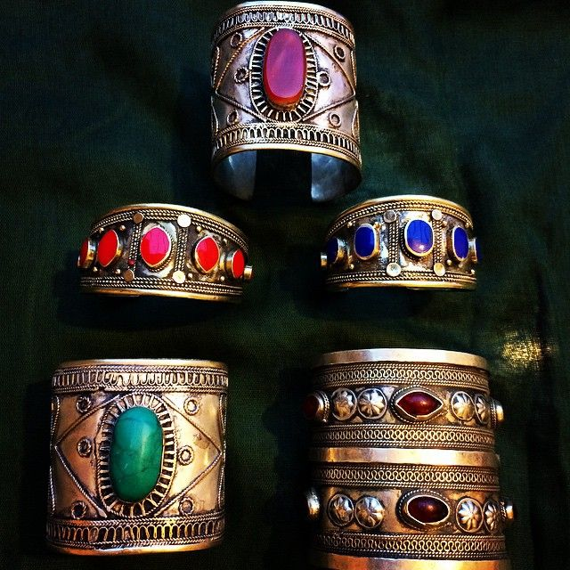

A handicraft, sometimes more precisely expressed as artisanal handicraft or handmade, is any of a wide variety of types of work where useful and decorative objects are made completely by hand or by using only simple tools. It is a traditional main sector of craft and applies to a wide range of creative and design activities that are related to making things with one's hands and skill, including work with textiles, moldable and rigid materials, paper, plant fibers, etc. One of the world's oldest handicraft is Dhokra; this is a sort of metal casting that has been used in India for over 4,000 years and is still used. In Iranian Baluchistan, women still make red ware hand made pottery with dotted ornaments much similar to the 5000 year old pottery tradition of Kalpurgan, an archaeological site near the village . Usually, the term is applied to traditional techniques of creating items (whether for personal use or as products) that are both practical and aesthetic. Handicraft industries are those that produce things with hands to meet the needs of the people in their locality. Machines are not used.

Collective terms for handicrafts include artisanry, handicrafting, crafting, handicraftsmanship and handcrafting. The term arts and crafts is also applied, especially in the United States and mostly to hobbyists' and children's output rather than items crafted for daily use, but this distinction is not formal, and the term is easily confused with the Arts and Crafts design movement, which is in fact as practical as it is aesthetic.
Handicraft has its roots in the rural crafts—the material-goods necessities—of ancient civilizations, and many specific crafts have been practiced for centuries, while others are modern inventions or popularizations of crafts which were originally practiced in a limited geographic area.
Many handcrafters use natural, even entirely indigenous, materials while others may prefer modern, non-traditional materials, and even upcycle industrial materials. The individual artisanship of a handcrafted item is the paramount criterion; those made by mass production or machines are not handicraft goods.
Seen as developing the skills and creative interests of students, generally and sometimes towards a particular craft or trade, handicrafts are often integrated into educational systems, both informally and formally. Most crafts require the development of skill and the application of patience but can be learned by virtually anyone.
Afghanistan is the best producer of different handicrafts in whole around the world, especially Afghan women make the best and the most beautiful hanicrafts.
Kunduz businesswomen association said womens handicrafts have gained popularity overseas.
The handicrafts include traditional clothes, carpet weaving, embroidery, bead weaving and leather braiding.
According to the association in Kunduz, their products have been sold both in local markets and foreign markets, where they have been exhibited as well.
Head of the department Muslima Walji said about 100 pieces of the handicrafts were displayed at an exhibition in Dushanbe, Tajikistan, where thousands viewed the products and some sent their orders for handicrafts to the association.
Situated in the North of Afghanistan, Kunduz shares a border with the neighboring Tajikistan.
The association called such exhibitions important for enhancing Afghanistan handicrafts business.
Within the framework of the Afghan Chamber of Commerce and Industries, the association was established in 2009 and currently employs almost 1,000 Afghan businesswomen.
Kunduz womens handicrafts are gaining recognition in the international markets. Many of the women in the association have become self-sufficient, said Muslima Walji.
Meanwhile, businesswomen Nadia said local demand for traditional outfits has been declining.
Before, people from my province used to buy a lot of hand-made traditional clothes. However, today the import of modern clothes has hit our business hard.
Nadia urged the association to increase their efforts in finding markets for women handicrafts.
Muslima Walji said the association is planning to establish an industrial park for Kunduz businesswomen that would positively impact the sales of the handicrafts.
She added that the association would launch an exhibition for the women handicrafts on the 8th of March, which coincides with the international women day, to help boost their sales.
Handicrafts is the best artistic expression of the Afghan people, particulary the Afghan women. Afghanistan hand weaving and fine carpet design is famous worldwide. Afghanistan’s handicrafts held a prominent place in the market in ancient time.
We are able to organize small, middel and big production of model stretching sweats and other product/different kind of fine arts, decoration items and handicrafts from wools, which in the same time absorbs the many unemployed Afghans womens to earn a living to support their children and families and to reinforce the role of women in the society.
Handicrafts is the best artistic expression of the Afghan people, particulary the Afghan women. Afghanistan hand weaving and fine carpet design is famous worldwide. Afghanistan’s handicrafts held a prominent place in the market in ancient time.
We are able to organize small, middel and big production of model stretching sweats and other product/different kind of fine arts, decoration items and handicrafts from wools, which in the same time absorbs the many unemployed Afghans womens to earn a living to support their children and families and to reinforce the role of women in the society.
Afghanistan can be that new low-end manufacturing costs for international production for hand-knitted and other products.
Every culture in the world consists of two major parts; material culture and non-material culture. The material culture includes all the tangible objects that are socially used in a society. The material culture may include cloth, jewelry, pottery and other objects that are a part of a society, while the non-material culture may include the norms, values and rules and regulations prevailing in various institutions.
Both material and non-material cultures of a society integrate to form a complete culture. The material culture of a society may include the natural objects, with or without alterations, or they may include the objects which are completely man-made. They not only serve as fulfilling a particular necessity of the society but can also serve as its identification.
The objects that are man-made require skill and concentration. Almost every culture in the world has such objects and such skills. Some of the skills are universal, i.e. they prevail almost in every culture but there are some skills in every culture that are unique to that particular culture, and it is because of those skills and their productions that make a culture differ from others.
They become the symbols of recognition of a culture. Apart from social importance; they, if given proper attention, can benefit the society in economic terms as well. Most of the societies of the world have benefited from their unique skills and have industrialized their products in order to gain the attentions of international market and be an integral part of economic support for them.
Afghan culture is also equipped with such skills and their marvelous products. But, as there have been continuous wars in our country such skills have not gotten great chances of dissemination and exposure. Still, they exist and make our culture stand unique and are also the symbol of our recognition. Among them the notable one is our handicrafts.
The weaving of carpets and rugs is not a new phenomenon; it has its origin very early in human beings' civilized history. They are the gifts of agricultural age. These carpets and rugs are mostly woven both by males and females with the threads that are made from the hair of camel, ship and sometimes cotton. They depict the agricultural aspect of our culture and the fact that most of Afghan people have been largely dependent on farming and using pets and their products for different purposes.
The Afghan carpets and rugs are famous for their colors and patterns. Their colors are mostly bright, including many colors woven on red background and the patterns are marked with bold geometric shapes and medallions embellished further by zigzags, stripes and squares. Furthermore, they are very much reliable as far as the quality is concerned and can be useful for many years and most importantly, they have been able to gain the attention of not only local appreciators of art and craft but also of the international ones.
They can really find an especial place in world market if promoted properly. However, the turbulent aspect of our society has always stopped our cultural traits from flourishing appropriately. The wars have always threatened our cultural traits to hide away un-noticed. There has been much loss in that regard. Yet, there are possibilities to excel much in this field.
No doubt, our handicrafts possess and will keep on possessing an important position in our culture even after so much industrialization and modernization in the world. It is because the value of handmade objects can never be under-estimated. But, it is also a fact that modern techniques can really help us in improving our skills in this regard. They can also help us in producing more than we do with the older techniques. Further, the new ideas of commercialization can also assist us in promoting our handicrafts in international markets.
Therefore, the government and private industries must always keep on searching for such techniques in order to bring out afghan handicrafts out of oblivion, and make the world realize their importance. Proper institutionalization of this skill can really help in doing so and the international exhibitions, both by national and international organizations can also play a major role in introducing our handicrafts to the world.
In the same regard, the Afghanistan's participation in different regional and international exhibitions of handicrafts and industrial products can play a very important role. Such exhibitions can be an extremely important opportunity for Afghan handicrafts to acquire a prominent place in the world market.


Afghan handicrafts have all the potential to compete with international handicrafts and they can find good value in the international market as well. Moreover, the Afghan authorities must also strive to arrange national exhibitions and keep on supporting and encouraging efforts to improve the industry so that the people who can play a tremendous role in this regard must not hesitate to come forward.
Afghan culture has an advantage of having handicrafts in its contents. These handicrafts are now an integral part of our tradition and can serve as an important industry in future. The proper promotion of this industry will not only be helpful in generating economic gains but will also provide many skilled jobless people great opportunity of earning livelihood for them.
It will also be helpful from the view that it will engage people in constructive activity, rather than becoming part of destructive activities, like terrorism. Further, it will also provide great opportunity of engaging more women of the society in this field, without much deterrence from tribal bans, because they can carry on this task right in their houses. And, the most important thing is that its promotion can be helpful in making the new generation inherit the skill with the same standard and even better.
Afghan jewellery plays an important role in the way in which Afghan women accessorize their traditional clothes. Without the stunning chunky Afghan jewellery , the traditional dress (Gandi Afghani) will look bare and incomplete like Romeo without Juliet.
The Afghan jewellery is not just popular among Afghans for its beauty; it also has a captivating history that dates back to thousands of years and shadows the ancient routes that interlaced through Afghanistan.
As I grew up in the West, I have developed a love for the culture, colour and life that sparks out of Gandi Afghani and its jewellery . I have always been intrigued by the designs and colours used to create the traditional clothes and the jewellery and I’ve always wanted to know the history behind these stunning designs, so I have decided to explore and find out.
Research reveals that countless challenges were faced by the Afghan traditional clothes and jewellery in its history. During the Soviet occupation period and the time of the Mujahedin and the Taliban, many personally owned pieces were sold.


The Afghan Kuchi jewellery is distinguished on the basis of whether the pieces are made of costly materials, imported pieces, or made of beads. The more expensive pieces of jewellery are generally created using precious and semiprecious stones worked in the metal and inlay settings by metal craftsmen in public workshops.
The more expensive the jewellery, then it has most likely derived from the Afghan environment, it will have precious stones carved in which would be found in mountainous or riverine areas. Those types are generally worn on special occasions, while the less costly ornaments made from imported materials are worn on an everyday occasion.
The most distinguished Kuchi jewellery pieces are those that are worn by young women for special occasions like their Nikka (Muslim wedding or engagement celebration), because jewellery made of precious and semiprecious material are generally worn on those days.
More simpler jewellery that is worn by Afghan women every day in Afghanistan are made from cotton-stung Mora (beads) and coins also natural products such as cloves, nuts, and clay that are easily found locally in Afghanistan.
Not only is the Afghan jewellery available in Afghanistan, they are now also sold worldwide, of course, for a much higher price than that in Afghanistan. I always wondered why that was.

I believe for Afghans to import Afghan jewellery from Afghanistan and sell it in the West or other parts of the world would be for business reasons. But why are non-Afghans so keen to purchase these products at such a high price?
Well, a look at the images below answers this question. Of course, it is because of the beautiful work done to these pieces, full of detail, colour and culture. But is it also because of what’s trending in the West?
As a young person living in the West, I have come to realise that in fact it is because Afghan jewelry is now trending. I see people from all corners of the World in London, walking past me every morning and each day I do not fail to see a female wearing such jewellery that is, if not exactly the same, then similar to Afghan jewellery.
People are developing a love for the Afghan style. I see the Afghan clothes worn by top ranked models on catwalk shows. I sometimes get the feeling that the Afghan culture has really taken over the West by a storm.
Some people claim that it is not just the Afghan culture that those pieces, fashion shows, artists represent. But I genuinely believe it is from the routes of our very own Afghanistan.
Here you can see more pictures of Afghanistan Golden Handicrafts